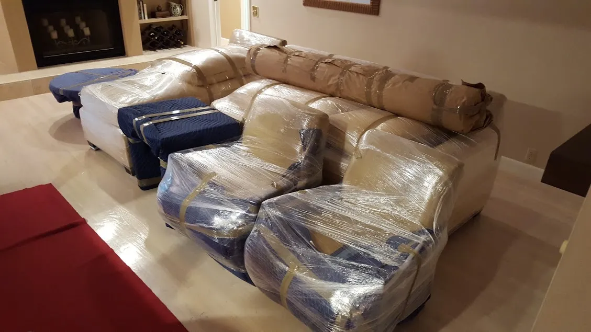

افضل شركة نقل عفش بريدة بخصم 30%

تتميز شركة نقل الرياض بأنها افضل شركة نقل عفش بريدة، حيث تقدم خدمات متكاملة تلبي احتياجات العملاء في جميع مناطق المملكة، وتعتبر عملية نقل الأثاث من المهام التي تتطلب الدقة والاحترافية، ولهذا فإن اختيار شركة موثوقة يمكن أن يُحدث فرقًا كبيرًا في تجربة النقل، وتقدم شركة نقل الرياض مجموعة من الحلول الفعالة والمبتكرة التي تضمن سلامة الأثاث وسرعة الإنجاز، مما يجعلها الخيار الأمثل لكل من يبحث عن خدمات نقل عفش متميزة، فإذا كنت تبحث عن الجودة والاحترافية فإن شركة نقل الرياض هي الخيار الذي لا غنى عنه.
شركة نقل عفش بالرياض
تتمتع شركة نقل الرياض بسمعة ممتازة في مجال نقل العفش بالرياض، حيث تقدم خدماتها بأعلى معايير الجودة والاحترافية، وتعمل الشركة على تلبية احتياجات العملاء من خلال توفير خدمات شاملة تشمل النقل والفك والتركيب، وتعتبر الشركة من افضل شركة نقل عفش بريدة بفضل التزامها بتقديم خدمات موثوقة. إليك بعض النقاط الرئيسية حول الشركة:
- فريق العمل المؤهل: يتكون فريق العمل من متخصصين مدربين على التعامل مع جميع أنواع الأثاث مما يضمن سلامة الممتلكات أثناء النقل، ويتمتع كل فرد من الفريق بخبرة واسعة في هذا المجال.
- معدات حديثة: تستخدم الشركة معدات نقل متطورة تساهم في تسهيل عملية النقل وتقليل الوقت المستغرق، وتشمل المعدات الشاحنات المزودة بأدوات رفع متخصصة.
- تغليف احترافي: يتم تغليف الأثاث بطريقة احترافية لحمايته من الخدوش والضرر أثناء النقل، وتستخدم الشركة مواد تغليف عالية الجودة مثل الفقاعات الهوائية والبطانات القابلة لإعادة الاستخدام.
- تقديم خدمات متنوعة: تشمل خدمات النقل الأثاث المنزلي والمكاتب والمحلات التجارية مما يجعلها مناسبة لمختلف الاحتياجات، وبالإضافة إلى ذلك يمكنهم التعامل مع الأثاث الثمين والقطع الفنية.
- أسعار تنافسية: تقدم الشركة أسعاراً معقولة تناسب جميع الميزانيات دون التنازل عن جودة الخدمة، ويمكن للعملاء الحصول على عروض خاصة عند الحجز المسبق.
باختيارك شركة نقل عفش بالرياض نقل أثاث بالرياض مع الفك والتركيب تضمن لنفسك تجربة نقل مريحة وآمنة، وأن شركة نقل الرياض تضع راحة العميل في مقدمة أولوياتها.
مستودعات نقل الأثاث شركة نقل الرياض
تعتبر مستودعات نقل الأثاث جزءاً أساسياً من خدمات شركة نقل الرياض، حيث توفر مكاناً آمناً لتخزين الأثاث والممتلكات، وتتميز مستودعات الشركة بالعديد من الخصائص التي تجعلها الخيار المثالي للعملاء، مما يضيف إلى سمعتها كواحدة من افضل شركة نقل عفش بريدة، وإليك بعض الخصائص الرئيسية:
- أمان عالي: تتمتع المستودعات بنظام أمان متكامل بما في ذلك كاميرات مراقبة وحراسة على مدار الساعة، ويتم تسجيل الدخول والخروج من المستودعات لضمان الأمان.
- تنظيم جيد: يتم تنظيم المستودعات بشكل يسهل الوصول إلى الأثاث عند الحاجة مما يوفر الوقت والجهد، ويتم تصنيف الأثاث وفقاً لنوعه وحجمه.
- ظروف تخزين مثالية: تتم المحافظة على درجات حرارة ورطوبة مناسبة لحماية الأثاث من التلف، وتشمل المستودعات أيضاً نظام تهوية جيد للحفاظ على جودة الهواء.
- خيارات مرنة للتخزين: توفر الشركة خيارات تخزين قصيرة وطويلة الأجل تناسب مختلف احتياجات العملاء، ويمكن للعملاء اختيار مساحات التخزين حسب الكمية المطلوبة.
- إمكانية الوصول السريع: يمكن للعملاء زيارة مستودعاتهم في أي وقت مما يتيح لهم الاطلاع على ممتلكاتهم بسهولة، وتقدم الشركة مواعيد مرنة للوصول وفقاً لجدول العملاء، وتعد شركة نقل الرياض الخيار الأمثل لمن يسعى إلى خدمات نقل عفش بالرياض نقل أثاث بالرياض مع الفك والتركيب، حيث تضمن لك الأمان والراحة في كل خطوة.
فك وتركيب المكيفات أثناء نقل العفش
تقدم شركة نقل الرياض خدمة فك وتركيب المكيفات كجزء من خدمات النقل الشاملة، وهذه الخدمة ضرورية لضمان عدم تعرض المكيفات للتلف خلال عملية النقل، مما يعزز مكانة الشركة كواحدة من افضل شركة نقل عفش بريدة، وإليك بعض الميزات الرئيسية لهذه الخدمة:
فنيون متخصصون
يتواجد في الشركة فريق من الفنيين المهرة الذين يمتلكون الخبرة في فك وتركيب جميع أنواع المكيفات، ويتمتع الفنيون بشهادات معترف بها في هذا المجال.
تأمين المكيفات
ويتم التعامل مع المكيفات بعناية فائقة لضمان عدم تعرضها لأي أضرار أثناء النقل، وتستخدم الشركة وسائل حماية خاصة مثل البطانات.
توفير الوقت والجهد
من خلال هذه الخدمة يمكن للعملاء تجنب البحث عن فنيين مستقلين ويضمنون أن كل شيء يتم بشكل منظم، وتوفر الشركة خدمة متكاملة تشمل كل خطوات الفك والتركيب.
اختبار الأداء بعد التركيب
بعد الانتهاء من عملية التركيب يجري الفنيون اختباراً للتأكد من أن المكيف يعمل بكفاءة، ويتم تقديم تقرير للعملاء عن حالة المكيف بعد التركيب.
خدمة شاملة
تشمل الخدمة فك المكيفات من الأماكن القديمة وتركيبها في المنازل الجديدة مما يوفر تجربة نقل سلسة، وبالإضافة إلى ذلك تقدم الشركة نصائح حول كيفية صيانة المكيفات، وإذا كنت تبحث عن شركة نقل عفش بالرياض نقل أثاث بالرياض مع الفك والتركيب، فإن شركة نقل الرياض تقدم لك حلاً متكاملاً يشمل جميع جوانب النقل.
خدمات شركة نقل الرياض
تتميز شركة نقل الرياض بتقديم مجموعة واسعة من الخدمات التي تلبي احتياجات العملاء في مجال نقل الأثاث، وتعتبر الشركة من افضل شركة نقل عفش بريدة بفضل التزامها بتقديم خدمات موثوقة، وإليك أبرز هذه الخدمات:
نقل الأثاث المنزلي: تشمل هذه الخدمة جميع أنواع الأثاث من غرف النوم والصالات والمطابخ، ويتم التعامل مع كل قطعة بعناية لضمان عدم تعرضها لأي أضرار.
- نقل الأثاث المكتبي: تقدم الشركة خدمات خاصة لنقل المكاتب والمعدات المكتبية بكفاءة واحترافية، وتشمل هذه الخدمة نقل الأجهزة الإلكترونية والمعدات الثقيلة.
- خدمات التغليف: يتم استخدام مواد تغليف عالية الجودة لحماية الأثاث خلال عملية النقل، وتشمل الخدمة أيضاً تغليف العناصر الهشة مثل الزجاجيات واللوحات الفنية.
- خدمة النقل الدولي: توفر الشركة خيارات نقل دولية للعملاء الذين يرغبون في الانتقال إلى خارج المملكة، وتتضمن هذه الخدمة الترتيبات الجمركية اللازمة.
- الدعم الفني المتواصل: يتوفر فريق الدعم للرد على استفسارات العملاء وتقديم المساعدة في أي وقت، ويمكن للعملاء الوصول إلى الدعم عبر الهاتف أو البريد الإلكتروني.
عند اختيارك افضل شركة نقل عفش بالرياض نقل أثاث بالرياض مع الفك والتركيب، فإنك تضمن لنفسك تجربة نقل سلسة ومريحة مع شركة نقل الرياض.
الأسئلة الشائعة حول افضل شركة نقل عفش بريدة
ما هي أنواع الأثاث التي يمكنكم نقلها؟
تقدم شركة نقل الرياض خدمات نقل تشمل جميع أنواع الأثاث، بما في ذلك الأثاث المنزلي مثل غرف النوم والصالات والمطابخ بالإضافة إلى الأثاث المكتبي والمعدات الثقيلة، ونحن نضمن التعامل مع كل قطعة بعناية وبأعلى مستوى من الاحترافية.
هل أحتاج إلى حجز الخدمة مسبقاً؟
نعم يفضل حجز الخدمة مسبقاً لضمان توفر فريق العمل والمعدات في الوقت الذي يناسبك، ويمكنك الاتصال بالشركة لتحديد موعد يناسب جدولك وستقوم الشركة بالتنسيق معك لضمان عملية نقل سلسة.
هل تقدمون خدمات النقل خلال عطلات نهاية الأسبوع؟
نعم، تقدم شركة نقل الرياض خدمات النقل خلال عطلات نهاية الأسبوع، ونحن ندرك أن الكثير من العملاء يفضلون الانتقال في هذه الفترات لذا نحن متاحون لتلبية احتياجاتكم في أي وقت.
كيف يمكنني التأكد من سلامة الأثاث أثناء النقل؟
تستخدم شركة نقل الرياض مواد تغليف عالية الجودة وتقنيات متقدمة لضمان سلامة الأثاث أثناء النقل، كما أن فريق العمل مدرب على التعامل مع الأثاث بعناية مما يضمن وصول كل قطعة إلى وجهتها في حالة ممتازة، وإذا كانت لديك أي مخاوف يمكنك مناقشتها مع فريق الدعم قبل عملية النقل.